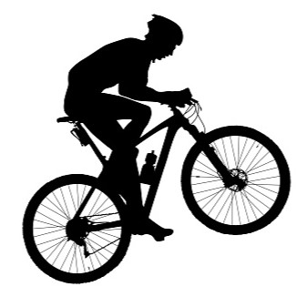

Strona stworzona dla rowerzystów
Ta strona powstała dla osób, które interesują się rowerami. Znajdziesz tutaj ciekawe i przydatne informacje.
Dowiesz się, jakie typy rowerów są najpopularniejsze, gdzie kupić rower, zobaczysz sztuczki, obejrzysz filmiki i rozwiążesz quiz wiedzy.
Warto jeździć na rowerze, bo mamy z tego wiele korzyści. Ten sport poprawia kondycję, redukuje stres i wzmacnia serce.